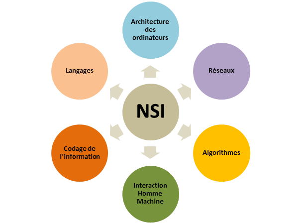

Devinez comment activer la fonctionnalité secrète...
En quoi consiste la spécialité NSI en 1ère
Choisissez votre couleur

Pour commencer, la spécialité NSI vous permet de comprendre les bases de la discipline informatique.
Nous voyons tout d'abord l'histoire de l'informatique, comment tout a commencé pour comprendre l'impact qu'elle a eu sur notre monde et sur la vie de tous.
Nous travaillons sur bon nombre de projets de groupe et nous relevons des défis en utilisant différents languages de programmation.
Pour faire la spécialité NSI, il faut aimer pratiquer car c'est en forgeant que l'on devient forgeron.
Si vous aimez travailler en groupe et que vous êtes intéressés par l'informatique, votre curiosité sera votre plus grand atout dans votre quête aux connaissances et la spécialité Numérique et sciences Informatiques vous conviendra parfaitement.